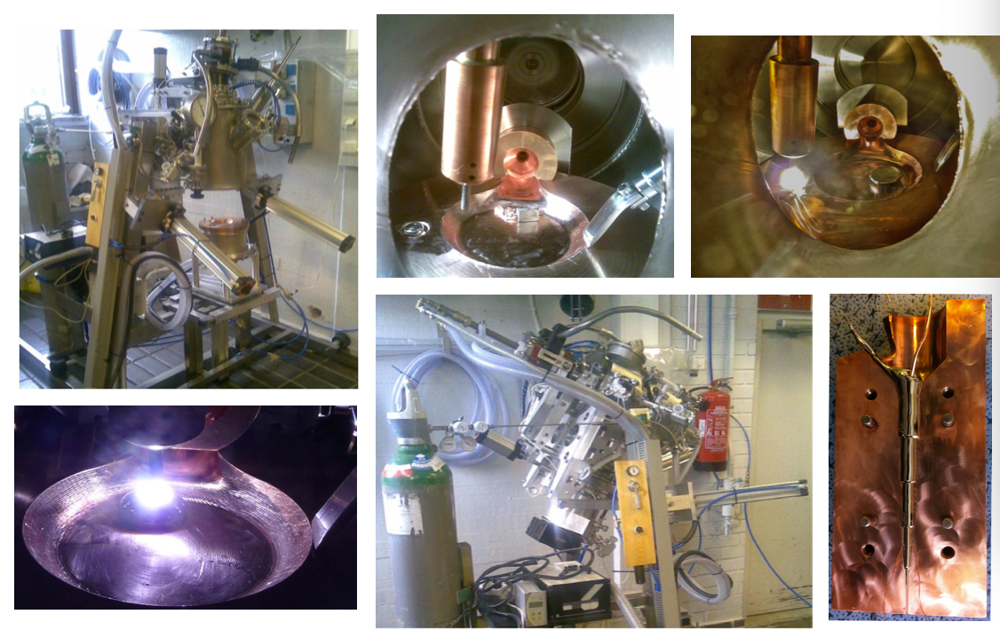
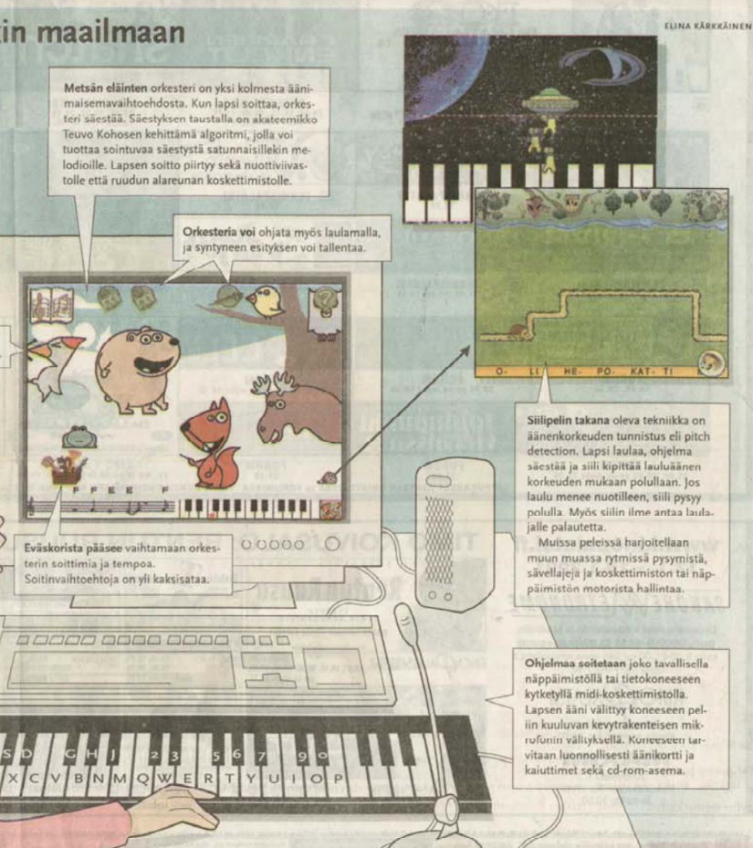

Memorable videos and images
Here is 3D pointcloud that was calculated from distance matrices with Python Scikit-learn MDS algorithm. Here is a link to the article about the details. The information of the point coordinates is recovered with linear algebra just from the distances between the points. This kind of methods can be useful for indoor navigation solutions, where the distances can be between sensors.

Here is a play-view of Hummcar AppStore published game. The game is controlled by audio pitch only. Custom coded pitch-detection (generalized autocorrelation) algorithm moves the black needle. Hitting the green-trinagle accelerates and hitting the red triangle decelerates the car. Gears are changed by hitting the blue triangle. AI handles steering to stay on the track. The game was made with Unity3D game engine and graphics were made with Blender and Gimp. It was discovered that humming can be used to control accurately as an user-interface method even in quickly changing situations. This might be handy for handicapped people.
Here is a photogrammetry video made from combination of drone-photographs and cell-phone photos. Meshroom software was used to produce 3D model that was imported to Blender for rendering.
Drone footage was used to produce 3D model of Jokiuoma park in Vantaa Finland. The Meshroom produced 3D model was imported into Blender that was used to animate this camera movement. In essense a digital twin of the park ornament was produced with with photogrammetry.
Here I am using my custom patented arc-melter to produce metallic glasses. Designing and constructing this apparatus formed a major part of my PhD thesis from Aalto University in 2013.
I trained stable diffusion with my selfies, so I can produce artificial selfies. It took few hours to take enough pictures and prime the pre-trained model to know me from a specific word (ernoo) in the prompt. I used Google Colab for the training. Some of the selfies are so good people think they are real photos.
Below are some pictures of the device in various stages of use. Also images of the produced metallic glass. Inside the chamber Titanium is melted to purify the chamber before the Zr-based alloy is alloyed and cast. More details about the measurements and data analysis can be found in the thesis.
One of my my first commercial programming jobs was this musical edutainment game that used pitch detection for game control. The game was originally about neural network produced accompaniment notes. There were three orchestras with different musical instruments. Later we added three sub games. In abduction game the user ended up playing the melody track of the song, when playing well. Another of the sub games was one of the first singing games in the world. The game was published in Dezember 2000 as a CD-Rom in Finland with the name SoittoPeli. It was reported in Helsingin Sanomat newspaper in January 2001. Later the same singing game was separated into its own product and published in 2003 as STARAOKE in collaboration with Intervisio to produce the TV-format of the same name that much later ended up winning a technical Emmy award. All the employees were caricatured in the game, apparently I was the bear that gets really excited.
.